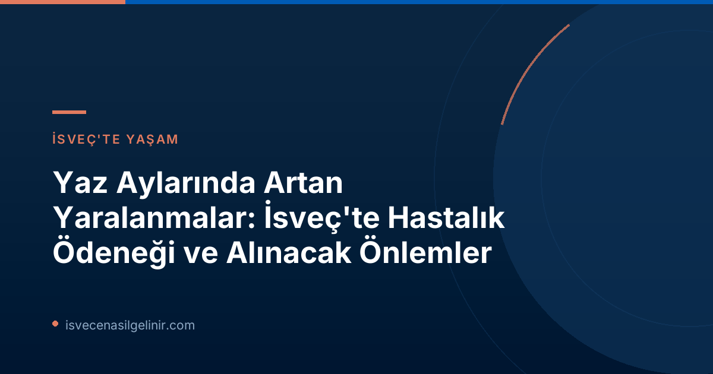

Yaz Aylarında Neden Yaralanmalar Artıyor?
Försäkringskassan analisti Ulrik Lidwall'ın belirttiğine göre, insanlar yazın daha fazla dışarıda vakit geçiriyor ve fiziksel olarak daha aktif oluyorlar. Ancak bu artan aktivite, kişilerin kendi kapasitelerini aşan etkinliklere yönelmesine ve dolayısıyla yaralanma riskinin yükselmesine neden oluyor.
Uzman Görüşü ve Olası Sebepler
Lidwall, "Dışarıda olmak ve hareket etmek elbette iyi bir şey, ancak istatistiklerde görüyoruz ki birçok kişi kapasitesini abartıyor ve kendilerine zarar veriyor," açıklamasını yapıyor. Özellikle tatil dönemlerinde, normalde yapmaya alışık olunmayan faaliyetlere girişilmesi, kas-iskelet sistemi rahatsızlıkları veya psikolojik sorunlara bağlı hastalık izinlerinin aksine, yaralanmalardan kaynaklanan hastalık izinlerinin artmasının ana sebeplerinden biri olarak öne çıkıyor.
İsveçlilerin Aktif Yaşam Tarzı ve Tatil Alışkanlıkları
Trambolin kazaları, dağ yürüyüşlerinde burkulmalar veya evde yapılan tadilat işleri sırasında düşmeler gibi durumlar İsveç yazlarının tipik yaralanma sebeplerinden. Bu durum, İsveçlilerin doğayla iç içe ve aktif bir yaşam tarzını benimsemesiyle de yakından ilgili.
İsveç'te Hastalık İzni ve Hastalık Ödeneği Süreci
İsveç'te bir çalışanın hastalanması veya yaralanması durumunda belirli bir süreç işler. Bu süreç, çalışanların mali güvencesini sağlamak amacıyla hem işveren hem de Försäkringskassan tarafından yönetilir.
İşveren Sorumluluğu ve Försäkringskassan’ın Rolü
Bir çalışan yaralandığında veya hastalandığında, ilk 2 hafta boyunca hastalık maaşını (sjuklön) işvereninden alır. Bu sürenin sonunda, eğer kişi hala çalışamayacak durumda ise, Försäkringskassan'a hastalık ödeneği (sjukpenning) başvurusunda bulunabilir. Bu sistem, bireylerin uzun süreli hastalık veya yaralanma durumlarında gelir kaybı yaşamamasını hedefler.
Hastalık Ödeneği Başvuru Süreci: Adım Adım
| Süre | Sorumlu Kurum/Kişi | Açıklama |
|---|---|---|
| İlk 14 Gün | İşveren | Çalışan, hastalık maaşını (sjuklön) işvereninden alır. |
| 14 Gün Sonrası | Försäkringskassan | Çalışamaz durumda olan kişiler Försäkringskassan'a hastalık ödeneği (sjukpenning) başvurusunda bulunur. |
Hastalık ödeneği süreçleri ve diğer yasal haklarınız hakkında daha fazla bilgi edinmek için, İsveç'teki yasal süreçleri ve sverigemedborgarskapsprov.com adresini ziyaret edebilirsiniz.
İstatistiklerle Yaz Dönemi Yaralanmaları
Försäkringskassan'ın açıkladığı veriler, yaz aylarındaki yaralanmaların ciddiyetini ve yarattığı mali yükü gözler önüne seriyor. Genel olarak yaz aylarında hastalık izni vakaları azalsa da, yaralanma kaynaklı vakalar tam tersine artış gösteriyor.
Yıllık Hastalık İzni Vakaları Genel Bakış
Her yıl Försäkringskassan'a yarım milyondan fazla yeni hastalık izni vakası başvurusu yapılmaktadır. En yaygın hastalık izni nedenleri arasında psikolojik rahatsızlıklar ve kas-iskelet sistemi hastalıkları (örneğin sırt ağrısı) yer almaktadır. Ancak yaz döneminde, özellikle Temmuz ayında, yeni başlayan hastalık izni vakalarının sayısı Ocak ayına göre yarı yarıya düşüyor. Ocak, en çok hastalık izni vakasının başladığı aydır.
Yaz Aylarında Yaralanma Türleri ve Oranları
Mayıs-Ağustos döneminde, kırık kol veya bacak gibi yaralanmalardan kaynaklanan tüm hastalık izinlerinin %35'i başlamaktadır. Yıllık bazda, çeşitli yaralanma türleri nedeniyle yaklaşık 60.000 yeni hastalık izni vakası kayıtlara geçmektedir.
2025 Yılında Yaralanma Kaynaklı Maliyetler
2025 yılında yaralanmalardan kaynaklanan hastalık izni vakaları, toplamda 4.4 milyon hastalık ödeneği gününe yol açmış ve bunun sonucunda 3.7 milyar SEK'lik (İsveç Kronu) bir hastalık ödeneği ödemesi gerçekleşmiştir. Bu rakamlar, yaz aylarındaki yaralanmaların hem bireyler hem de ulusal sağlık sistemi üzerindeki önemli etkisini göstermektedir.
Yazlık Riskler ve Korunma Yolları
Yaz aylarında aktif olmak güzel olsa da, olası yaralanmaların önüne geçmek için bazı önlemler almak mümkündür:
- Fiziksel aktiviteye başlamadan önce ısınma hareketleri yapın.
- Kapasitenizi aşan hareketlerden kaçının, kendinizi yavaşça zorlayın.
- Doğa yürüyüşleri ve dağcılık gibi aktivitelerde uygun ekipman ve ayakkabı kullanın.
- Evde yapılan tadilat işlerinde güvenlik önlemlerini (kask, eldiven vb.) alın.
- Yorgun veya dikkat dağınıklığı yaşadığınızda riskli aktivitelerden uzak durun.
Kış Aylarında Yaralanmalar: Kar ve Buz Faktörü
Försäkringskassan verilerine göre, yaz aylarındaki artışa ek olarak, kış aylarında da yaralanma vakalarında bir yükseliş gözlemlenmektedir. Bu durum, kısmen kar ve buz nedeniyle meydana gelen düşme ve kazalarla ilişkilendirilmektedir. Bu da İsveç'te mevsimsel olarak değişen yaralanma risklerinin olduğunu ortaya koymaktadır.
Yaz aylarının keyfini çıkarırken, sağlığınızı ve güvenliğinizi ön planda tutmayı unutmayın. Försäkringskassan'ın güncel duyurusu, bu konuda dikkatli olmanın önemini bir kez daha vurgulamaktadır.
Referanslar:
İsveç'te Güvenli ve Sağlıklı Bir Yaz Geçirin!
Yaz aylarında artan yaralanma risklerine karşı bilinçli olun. Försäkringskassan'ın yönergelerini takip edin ve spor yaparken veya hobilerinizle uğraşırken daima dikkatli olun. Kendi sağlığınız, İsveç'teki yaşam kaliteniz için çok önemlidir.